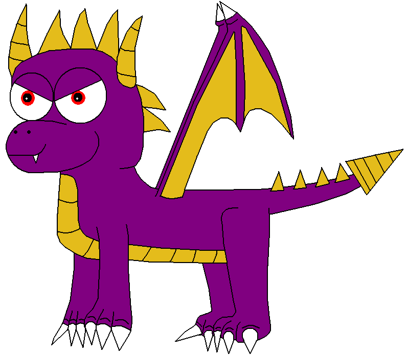

They should have at least a rudimentary understanding of:
Is the migration being done as part of a development process?
Is the whole site being migrated, or just part of it?
You'll need an overview.
One tab for each content type.
Assign responsibility.
Action Item 1: Mappings - Do, review, approve
Action Items 2 & 3: Migrate all the things
Action Items 4 & 5: Review and Test
Action Item 6: Dress rehearsal, final approval, launch!
Bring potential vendors a plan that includes these things, and you will be well on your way to a planned, successful migration!
What are some strategies you've learned during your projects?
Any dragons woken? Pacified?
